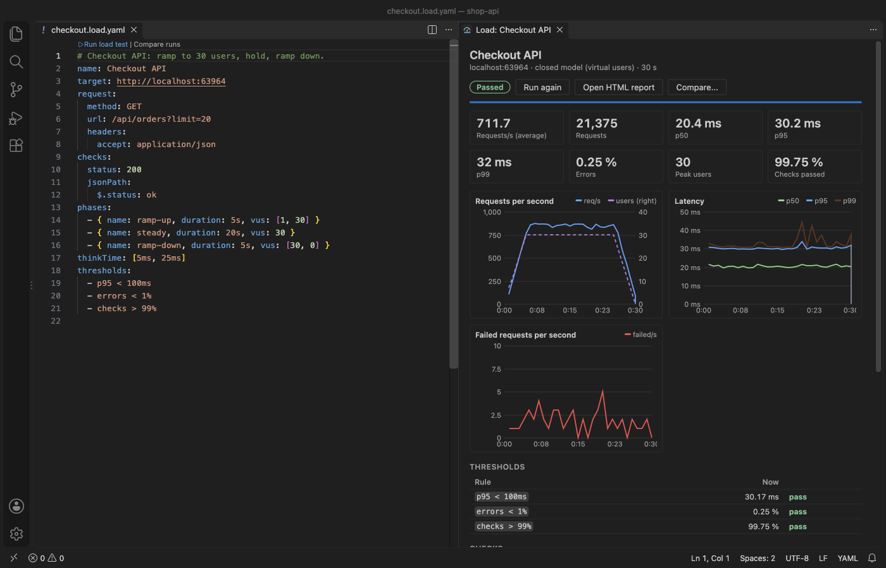

Open files in VS Code and Cursor / Code and APIs
Load test an HTTP API in VS Code
Load Testing & HTTP Load Tests runs a load test from a small .load.yaml file in VS Code, with the engine built in, so there is no k6, JMeter or cloud account to set up. A live dashboard shows requests per second, p50, p95 and p99 latency, failures and status codes, and thresholds such as p95 < 300ms turn the run into pass or fail. Each run is saved as JSON and as an HTML report that opens offline. Zovo Pro (USD 19 once) adds Export Run and All Runs to CSV, with 3 free tries each.
Free, MIT license. Extension ID zovo.zovo-load-testing, version 0.2.1. Needs VS Code 1.90.0 or newer.

Steps in VS Code
- Install Load Testing & HTTP Load Tests from the Marketplace, or press Ctrl+P (Cmd+P on macOS) and run
ext install zovo.zovo-load-testing. - To see it first, run "Load Testing: Try It on a Demo Server". It starts a small JSON API on 127.0.0.1 and runs a 23 second test against it.
- Run "Load Testing: New Load Test" and enter the base URL of your API, such as
http://localhost:3000. Or right-click a.http,.rest, HAR, OpenAPI or JMeter.jmxfile and pick "Create Load Test from File", or run "Create Load Test from cURL". - Edit the file. In
phases, setvusfor virtual users orratefor requests per second, with ramps such asvus: [1, 20]. Addthresholdssuch asp95 < 300msanderrors < 1%. - Click "Run load test" above the first line. The first run against a host asks you to confirm the host and the load.
- Watch the dashboard and press Stop at any time. Then open the HTML report from
load-test-results/, or run "Load Testing: Compare Two Runs" to see before and after a change.
Where Zovo Pro saves time
Single requests and multi-step scenarios, CSV data, the live dashboard, thresholds, JSON and HTML reports, compare, history, scheduled runs, every import and the CI runner are free, with no account and no time limit.
To get a load test into CI or a pull request, Export Run turns one saved run into a per-second CSV timeline, JUnit XML with each threshold and check as a test case, or a Markdown summary. The test report views of GitHub Actions, GitLab, Jenkins and Azure DevOps read the JUnit file. The other Pro tool is All Runs to CSV, with one row per saved run (requests per second, latency percentiles, errors and pass or fail) for a trend in a spreadsheet.
With Export Run (Zovo Pro)
- Right-click a run's
.jsoninload-test-results, or run "Load Testing: Export Run: CSV Timeline, JUnit XML or Markdown (Pro)" from the Command Palette. - Pick CSV, JUnit XML or Markdown, and where to save.
- A try counts only when the file is written. Escape costs nothing.
Export Run works 3 times on your computer before it asks for a license, and a try counts only when you get a result. Opening a file shows no popup and no countdown.
Zovo Pro costs USD 19 once. It is not a subscription, and it turns on the Pro tools in every Zovo extension, not only Load Testing & HTTP Load Tests. After a card payment (Stripe) your license key shows on the next page. In VS Code, run "Zovo Pro: Enter Zovo Pro license key" from the Command Palette and paste it. The key is checked on your computer, with no network call. With GitHub Sponsors, pick the "$19 one time" tier, then run "Zovo Pro: I already paid: unlock with GitHub Sponsors" and sign in with the same GitHub account. With PayPal, send USD 19 with "Zovo Pro" in the note and the key comes by email within a day.
A team of 5: USD 59 once, by card or by PayPal. Every rule and every Pro tool is on the Zovo Pro page.
Steps in Cursor, Windsurf or VSCodium
- Open the Extensions view with Ctrl+Shift+X (Cmd+Shift+X on macOS).
- Search for
zovo.zovo-load-testingand click Install. Cursor, Windsurf and VSCodium install from Open VSX, where it is published aszovo/zovo-load-testing. - If your editor has no gallery, download the .vsix from the Open VSX page and run "Extensions: Install from VSIX...".
- Then use it the same way as in VS Code.
What Load Testing & HTTP Load Tests handles
- Requests with headers and JSON, form or raw bodies, and multi-step scenarios that pass values from one response to the next request.
- Virtual users (closed model) and a fixed rate of requests per second (open model), with ramps.
- Checks on status, latency, body text, JSONPath and headers.
- Imports from .http and .rest files, cURL, HAR, OpenAPI and Swagger, and JMeter HTTP samplers.
What it does not do
- HTTP/1.1 only, with no HTTP/2 or WebSocket.
- The load comes from one machine, your own.
- Redirects are not followed. A 3xx response is counted as it is.
- By default a test may use at most 200 virtual users, 5,000 requests per second and 60 minutes (settings
loadTesting.maxVirtualUsers,loadTesting.maxRequestsPerSecondandloadTesting.maxDurationMinutes). - Only test servers you own or may test.
*.govand*.milare blocked by default.
Other options
- k6. A free, scriptable load testing tool from Grafana, run in a terminal with JavaScript test files. Its VS Code extension repository is archived.
- Apache JMeter. A free desktop load testing app with many plugins. This extension imports its HTTP samplers.
- Azure Load Testing. A paid cloud service for load from many machines. It needs an Azure account.
Install counts and Open VSX status were checked on 12 November 2026. Descriptions in quotes are the extensions' own.
Questions
Do I need k6 or JMeter installed?
No. The engine is built into the extension and runs in a background thread, so the editor stays responsive.
Can I run the same test in CI?
Yes. The engine is plain Node with no dependency. Check out the extension repository in your workflow and run scripts/ci-run.js with your test file. Exit code 1 means a threshold failed.
Can it send load to any host?
Only to hosts you confirm in a dialog before the first run. A host that comes from a response or a CSV row is refused.
Does it work in Cursor or Windsurf?
Yes. Cursor, Windsurf and VSCodium install extensions from Open VSX. Search for the extension in their Extensions view and install it there.
More about Load Testing & HTTP Load Tests
Read the Load Testing & HTTP Load Tests page for every feature and setting, or the source code on GitHub.
Related guides
- Edit .proto files in VS Code with highlighting, formatting and go to definition
- Open a SARIF file in VS Code
- Preview a Swagger or OpenAPI file in VS Code
- Preview an HTML file with its CSS and images in VS Code
Zovo Pro and support
Zovo Pro: USD 19 once, every Zovo viewer. It turns on the Pro tools in this extension and in the other Zovo extensions you use. The free features stay free.
After a card payment your license key shows on the next page. Paste it with the command "Zovo Pro: Enter a key".
You can also support the work with no Pro:
Need your format supported?
Open a format request with a sample file, and I reply there whether it can be done. For USD 299 once, through this GitHub Sponsors tier, I add your file format or a missing feature to this extension, with tests, within 7 days.